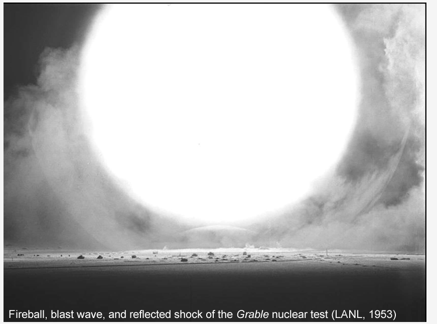
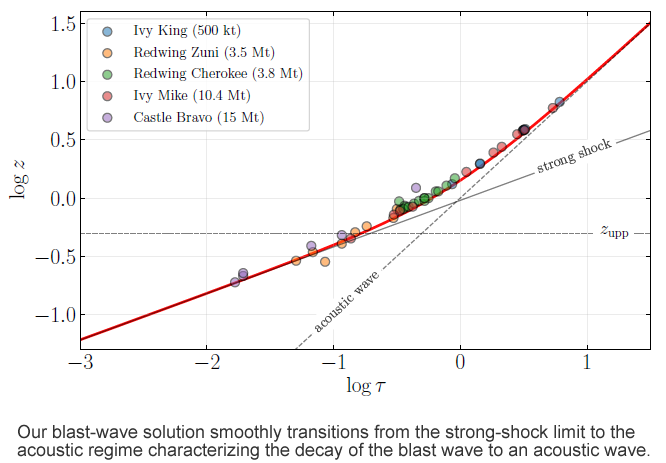
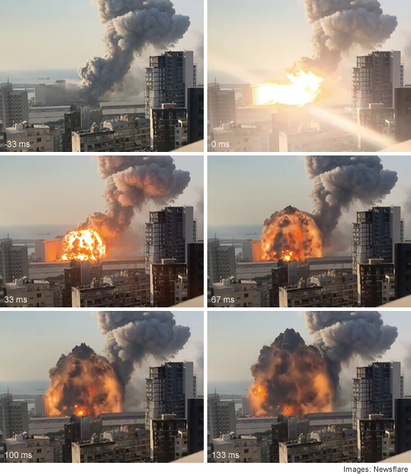

Projects
Physics of explosions
Using standard theoretical tools and a simple ansatz for solving the hydrodynamics equations, a general expression for the Mach number of the shock front of a blast wave is derived. Dimensionless coordinates are introduced allowing a straightforward visualization and direct comparison of blast waves produced by a variety of explosions, including chemical, nuclear, and laser-induced plasmas. The results are validated by determining the yield of a wide range of explosions, using data from gram-size charges to thermonuclear tests.
A simple formula for the Mach number of the front of a blast wave produced by an explosion in air was derived in the form of an ordinary differential equation, whose solution describes the position versus time development of the shock front. Time of arrival measurements can be used for estimating the energy E0 producing the shock wave, a crucial parameter that determines the shock evolution and the loading developed on obstacles with which it interacts. The general solution found contains the well-known strong-shock solution as a limit in the early stage of the shock development, beyond this regime the solution describes the transition to an acoustic wave in the far-field. In the near field the solution is only valid for nuclear explosions because a point source was assumed.
Experimental data from gram-sized charges was used verify the validity of the results and later declassified data from large-scale explosions was also employed using dimensionless coordinates for time and distance so that explosions from grams of PE4 to thermonuclear blasts can be visualized in a single diagram. The solution found serves as a generalization of other descriptions of the decaying blast wave, in this case, valid from the early (strong) stage to the asymptotically acoustic behavior at the far field.
The theory and validation using archival data has been published as Blast wave kinematics: theory, experiments, and applications, Shock Waves, in press (2022), available at arXiv:2110.09488
Physics of the Beirut explosion
On August 4, 2020 a devastating explosion occurred
at the port of Lebanon’s capital Beirut. Using
videos from social media and
basic image processing,
I studied the growth of the fireball as a function br />
of time to
estimate the explosive yield of the
explosion. Using the Sedov-Taylor-von Neumann relation
for the early
stage of a blast wave,
the data imply the release of 2.3 TJ, equivalent over half a kiloton
of TNT.